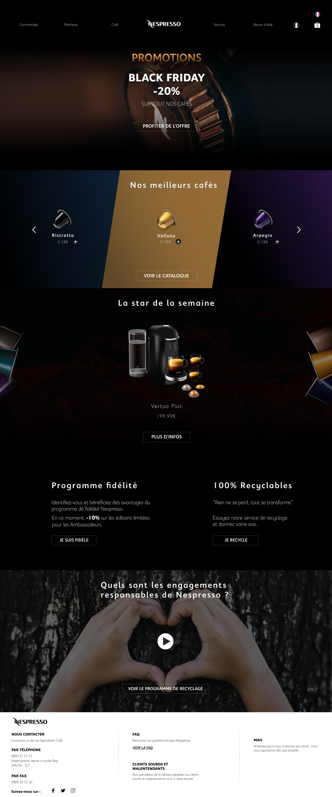

Le travail proposé était de refaire la HomePage du site de Nespresso. Pour ce faire, il fallait garder la charte graphique de la marque et suivre les tendances UI design actuelles pour rester dans l'aire du temps.
